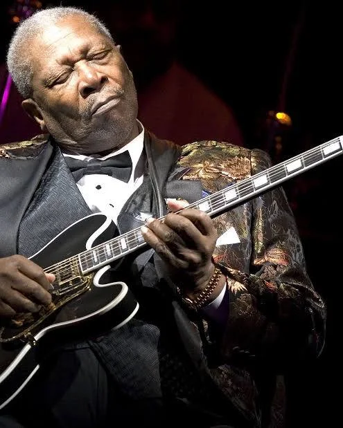
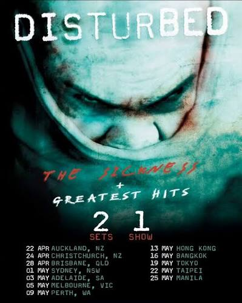

Cada pessoa tem seu gosto musical e com compositores e cantores não seria diferente, cada cantor, compositor,
cada poeta e cada ouvinte tem seus gostos pessoais e não temos que julga-los, pelo contrário, temos que respeita-los
até mesmo no funk temos letras impactantes que fazem sua crítica social, o funk é um dos gêneros musicais mais julgados diante o povo,
quando o funk nasceu era uma forma rapper de falar sobre amor e sobre as coisas mundanas que o povo do alto não dava importância, mas devemos lembrar que música é cultura,
se no funk de hoje em dia se fala apenas de coisas crueis e banais, não acham que isso não reflete na sociedade que esses "mc's", vivem?
músicas sempre vão fazer parte da sociedade independente do gênero, as coisas que citei do funk, podem ser ditas para o rock, pop, hip hop, samba, forró e assim por diante.
O Brasil é composto por estilos próprios e formas alternativas para se manifestar através da música, devido a isso
muitos jovens do país tem se posicionado políticamente muito anets da hora da maioridade. Isso reflete em uma sociedade
se formando de uma maneira única, os jovens revolucionários se encontram em mesas de escolas públicas e em filas para
ser atendidos em hospitais públicos, ou seja, vivem na pele aquilo que a sociedade tanto critica, por isso eles buscam mudança.
Nós adultos temos que nos concietizar por eles que ainda não possuem voz, devemos lutar por aqueles que não podem
e sim, a música é uma espécie de espada que pode ser sacada diante tal luta, iremos falar um pouco sobre os estilos musicais
e sobre como podemos usa-la para manifestar ela em nosso dia a dia.
Um estilo lindo que nasceu para encher de alegria o coração dos nossos, sendo referência latina o samba é um estilo musical focado para aqueles que tem um coração eletrizante e deseja dançar e cantar, o samba se tornou uma referência tão grande que teve impactos no rapper espanhol, e até mesmo no continente asiático, com principalmente japoneses desenvolvendo estilos próprios baseados no samba. E ta tudo bem, devemos abraçar esse tipo de comportamento, ser referência significa inspirar corações e despertar sonhos neles, e isso o samba faz bem uma cultura vindo do nordeste, saiu das terras de caatinga para o mundo, e isso é lindo. Vamos todos sambar em um ritmo eletrizante de pandeiro, badoque e cavaquinho afinal a vida ta complicada e ninguém gosta de complicações né? Então vamos dançar e cantar e esquer dos problemas

Bossa Nova, chamado por muitos de jazz brasileiro é um dos gêneros musicais mais importantes para a cultura brasileira
um nome tão grande quanto de Tom Jobim ressoa diante tal estilo, suas canções inspiraram gerações de artistas basileiros
com um forte tom de amor e tranquilidade, ele encantou o coração das moças, dos apaixonados e dos melancólicos de seu tempo
O movimento nasceu com jovens músicos universitários se juntando para cantar canções de amor, foi uma época de transição
da urbanização, o que deu um apelo e afetou diretamente nas letras da música, com o primeiro álbum do gênero sendo lançado
pela interpetração de João Gilberto, e composição de Tom Jobim e Vinicius Moraes, com uma batida no batoque, uma lírica cotidiana
e claro, o famoso canto falado, eles revolucionaram a indústria musical brasileira, tendo a música mais conhecida nomeada de "Garota Ipanema".
A música se transforma e se molda em cada continente e oriente, muitos dos estilos brasileiros nasceram mediante,
a outras culturas e outros povos, música é arte e arte é vida, ela nasce em qualquer tipo de ambiente e em qualquer coração
sentir a música não é para qualquer um, mas a música pode sim tocar a todos, e em cada pessoa é diferente.
"Quando canto o mundo pode parar", uma citação da música do artista rodrigo zin, uma citação simples, mas que é
repleta de significado para muita gente, um coração uma voz, um poeta ou um descrente, independentede quem seja,
a arte molda e transforma, e iremos discurtir sobre os gêneros musicais de outros países.

O Jazz e o Blues são dois dos gêneros musicais mais influentes e importantes da
história moderna. Nascidos nos Estados Unidos a partir da experiência e da cultura afro-americana,
eles compartilham raízes profundas, mas desenvolveram identidades, sonoridades e propósitos próprios.
O Jazz e o Blues formam uma das parcerias mais simbióticas e fascinantes da história da música, funcionando
como duas faces da mesma moedacultural afro-americana. Historicamente, o blues veio primeiro como a expressão
crua e visceral do sofrimento, da resiliência e das condições de vida no Sul dos Estados Unidos, servindo
como o solo fértil onde o jazz germinou. Enquanto o blues representava o desabafo direto e a alma do povo,
o jazz expandiu essa carga emocional para o terreno urbano, unindo-a a influências de bandas de sopro,
ragtime e harmonias europeias. Na prática, costuma-se dizer que o blues fornece o sentimento
e o lamento, enquanto o jazz fornece a técnica, o arranjo e a liberdade de expansão.
Essa união se concretiza no DNA compartilhado da improvisação e no uso marcante das blue notes aquelas
notas a baixadas que conferem a ambos os gêneros uma sonoridade melancólica, "chorada" e profundamente
humana. Aolongo das décadas, essa relação gerou constantes cruzamentos: seja quando grandes orquestras de
jazz adotaram a estrutura rítmica dos 12 compassos do blues, seja quando subgêneros como o Hard Bop e o
Soul Jazz trouxeram o jazz de volta às suas raízes populares na década de 1950. Dessa forma, mais do que
estilos separados, jazz e blues mantêm um diálogo eterno, alimentando-se mutuamente em um ciclo contínuo de
inovação, expressividade e liberdade artística.

O Blues surgiu no final do século XIX no Sul dos Estados Unidos, especialmente na região do
Delta do Mississippi. Ele nasceu do sofrimento, da resiliência e das condições de vida dos afro-descendentes
que trabalhavam nas plantações de algodão, combinando elementos de canto, gritos de campo e hinos religiosos.
Tradicionalmente focado em histórias de dor, superação, desilusão amorosa, pobreza e opressão — o que levou
o gênero a ser conhecido como o ato de "cantar sobre os problemas" —, o blue destaca-se por sua estrutura
clássica de 12 compassos (12-bar blues). Sua identidade sonora é moldada pelo uso marcante das blue notes
(notas abaixadas que transmitem uma sensação de melancolia) e pela escala pentatônica, que priorizam a
expressividade e o lamento.

Tendo a improvisação como seu verdadeiro coração, o jazz desafia estruturas fixas ao permitir que os
músicos criem melodias e variações em tempo real sobre uma base harmônica, estabelecendo um diálogo fluido e
expressivo entre os instrumentos. Esse espírito de liberdade artística transforma cada apresentação em uma
experiência única, onde a inventividade do intérprete ganha tanto destaque quanto a composição
original. Além dessa liberdade criativa, o gênero destaca-se por sua marcante complexidade harmônica e rítmica,
expressa em acordes sofisticados como sétimas, nonas e alterações combinados a ritmos sincopados
como o swing. Sustentado por uma instrumentação variada e versátil, que tradicionalmente reúne trompete, saxofone,
clarinete, piano, contrabaixo e bateria, o jazz consolidou-se como uma das formas de expressão mais ricas,
dinâmicas e influentes da história da música.
Ao longo das décadas, o jazz não parou quieto e passou por diversas eras marcantes que redefiniram seus rumos. Nos anos 1930,
a Era do Swing foi marcada pelas grandes orquestras e por nomes como Benny Goodman e Duke Ellington,
transformando o jazz na música de dança e no grande entretenimento popular da época. Nos anos 1940, o movimento
do Bebop, liderado por revolucionários como Charlie Parker e Dizzy Gillespie, tirou o jazz dos salões de dança
e o levou para os clubes noturnos, tornando-o uma arte complexa, veloz e voltada para a audição atenta. Nas décadas
de 1950 e 1960, o Cool Jazz e o Modal Jazz trouxeram contornos mais sofisticados, introspectivos e minimalistas,
culminando no lendário álbum Kind of Blue de Miles Davis, um dos maiores marcos da história da música. Já a partir
dos anos 1970, o Jazz Fusion abriu as portas para os instrumentos elétricos, sintetizadores e influências diretas do
rock e do funk, pelas mãos de artistas como Herbie Hancock e a banda Weather Report. Em suma, o jazz é
a celebração do diálogo coletivo aliado à individualidade, onde cada instrumento tem voz própria, mas
todos trabalham juntos para construir uma paisagem sonora viva, pulsante eeternamente aberta ao inesperado.

O Rock and Roll nasceu nos Estados Unidos em meados da década de 1950, fruto direto da fusão explosiva
entre o blues, o rhythm and blues (R&B) e a country music (a música tradicional branca do sul americano),
essa mistura quebrou barreiras raciais e culturais em uma época de forte segregação,
dando voz à juventude da pós-guerra com sua batida acelerada, guitarras elétricas marcantes e uma
atitude rebelde e enérgica. Pioneiros como Chuck Berry, Little Richard e Elvis Presley moldaram a base do
gênero, transformando-o em um fenômeno cultural de massa que simbolizou a liberdade e a contracultura juvenil.
Ao longo das décadas seguintes, o rock provou ser um dos gêneros mais versáteis e mutáveis da história, ramificando-se
em dezenas de vertentes que redefiniram o cenário musical global. Nos anos 1960, a "Invasão Britânica"
liderada por bandas como The Beatles e The Rolling Stones levou o rock a patamares inéditos de composição e
popularidade, abrindo caminho para o surgimento do rock psicodélico e do hard rock pesado de bandas como Led Zeppelin
e Black Sabbath. Nas décadas de 1970 e 1980, o som se expandiu para o virtuosismo do rock progressivo, a energia
crua e direta do punk rock (com Ramones e Sex Pistols), o peso do heavy metal e a estética vibrante do arena rock.
Encontrar o seu som não é apenas escolher notas ou afinar a voz; é descobrir uma parte de quem você é e dar a
ela uma via de escape para o mundo. Se você sente esse impulso de começar a cantar ou a tocar um instrumento,
mas ainda se pergunta qual estilo musical trilhar, saiba que essa busca não precisa ser um peso ou uma decisão
definitiva. A música não é uma caixa fechada onde você precisa caber perfeitamente; pelo contrário,
ela é um território vasto, livre e inteiramente moldável à sua verdade.
Talvez o seu coração balance com a energia crua e direta do rock, encontre conforto na melancolia e na alma do
blues, ou se encante com a liberdade e a sofisticação rítmica do jazz. Talvez o seu ritmo venha da força da MPB,
do pop, do folk ou de qualquer outra vertente que faça seus dedos coçarem para tocar ou sua voz querer escapar
pela garganta. O segredo para começar não está em acertar o estilo perfeito de primeira, mas sim em seguir o que
arrepia a sua pele e acelera o seu pulso. Deixe-se guiar pela curiosidade: escute discos, feche os olhos e
imagine quais acordes você gostaria que estivessem ecoando na sua sala.
Não tenha medo de soar amador, de desafinar nas primeiras tentativas ou de trocar de caminho no
meio da jornada. Todo grande músico, instrumentista ou cantor começou exatamente onde você está agora: diante de
um instrumento desconhecido ou de uma folha em branco, com mais vontade do que técnica. A música existe para
acolher a sua expressão, e não para julgar o seu ponto de partida. Dê o primeiro passo sem
a pressão da perfeição, escolha um som que faça sentido hoje e permita que
a sua voz e as suas mãos descubram, nota por nota, o seu próprio lugar no mundo.